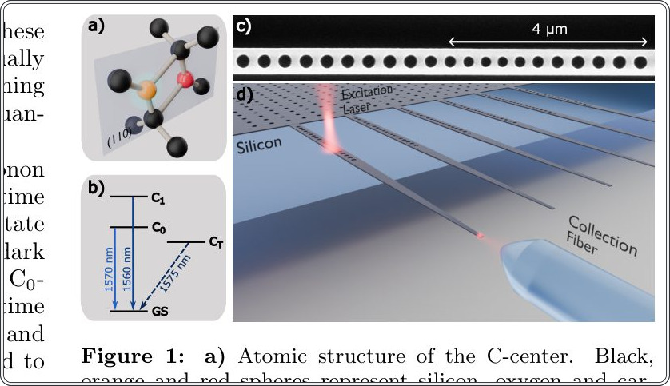
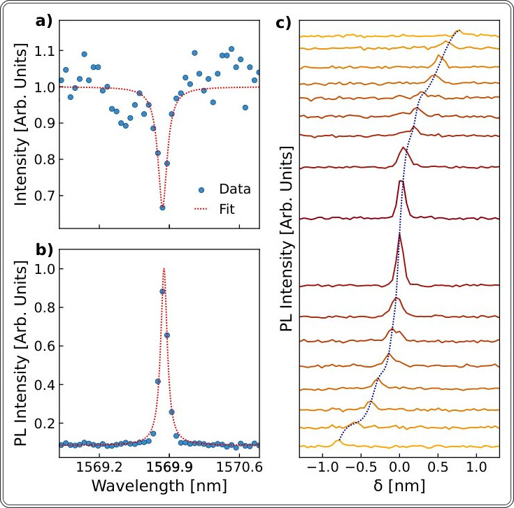
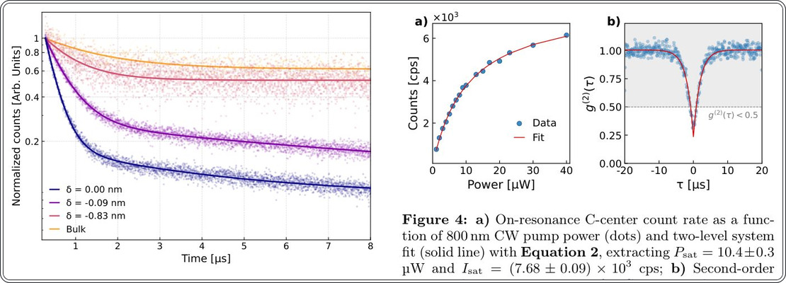
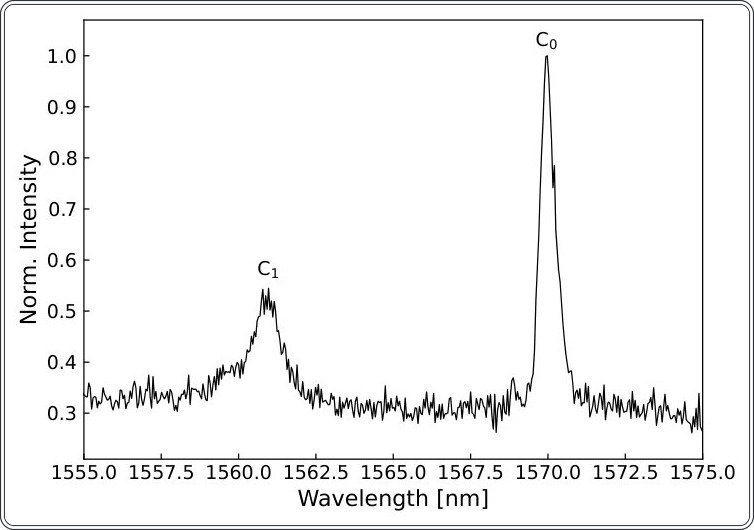
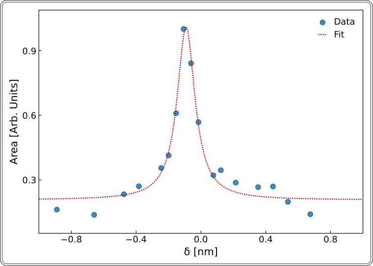
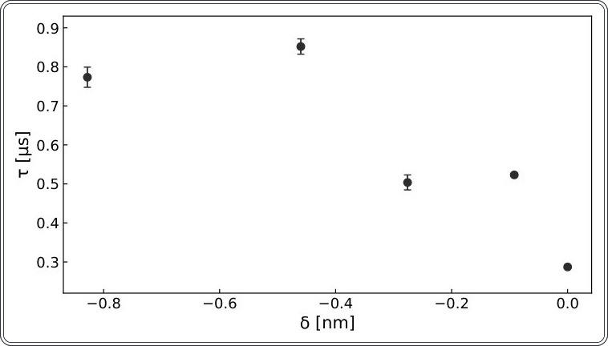
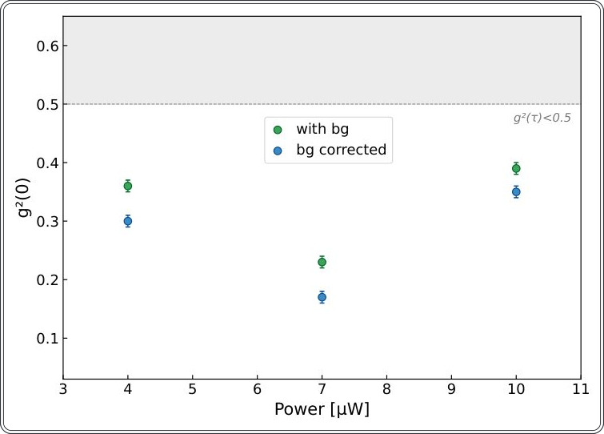

Кремниевые C-центры: новый стандарт для квантовых сетей в L-диапазоне


Исследователи успешно изолировали одиночный C-центр в кремниевой структуре, используя нанофотонный резонатор. Это позволило ускорить спонтанное излучение дефекта в пять раз благодаря эффекту Парселла. Полученный источник одиночных фотонов работает в L-диапазоне, что критически важно для передачи данных по оптоволокну с минимальными потерями.
Главное
- Изолирован одиночный C-центр с g^(2)(0) = 0,23.
- Время жизни сокращено в 5 раз до 0,287 мкс.
- Рабочий диапазон 1570 нм идеален для оптоволокна.
Подробнее
C-центр представляет собой комплекс из междоузельного углерода и кислорода (Ci-Oi). Его нулевая фононная линия (ZPL) находится в диапазоне 1565–1625 нм, что совпадает с максимумом прозрачности кварцевого волокна. Для изоляции одиночного излучателя авторы использовали одномерный фотонно-кристаллический резонатор в кремниевой нанобалке на изоляторе (SOI). Добротность резонатора (Q) составила (1,4±0,3)×10^4, что позволило настроиться на резонанс с ZPL (1569,831 нм).
При взаимодействии с модой резонатора время жизни возбужденного состояния сократилось с 1,45±0,08 мкс до 0,287±0,002 мкс. Это соответствует нижнему пределу фактора Парселла (FP) ≥ 33. Качество одиночного фотонного излучения подтверждено измерением автокорреляционной функции второго порядка g^(2)(0) = 0,23 без коррекции на фон. Расчеты проводились при температуре 8 К с использованием лазерной накачки на 800 нм.
Ограничения
Результаты получены при криогенной температуре 8 К, а эффективность ограничена наличием темных триплетных состояний.
Подробный разбор статьи
Резюме
Интеграция источников одиночных фотонов в кремниевые фотонные схемы является ключевым этапом для создания масштабируемых квантовых коммуникационных систем. Среди различных дефектов в кремнии C-центр выделяется своей бесфононной линией излучения в телекоммуникационном L-диапазоне (1565–1625 нм), что соответствует области минимальных потерь в оптическом волокне. Несмотря на этот потенциал, выделение одиночных C-центров ранее оставалось нерешенной задачей. В данной работе авторы впервые демонстрируют изоляцию одиночного C-центра путем его интеграции в нанофотонную кристаллическую полость на основе сужающегося нановолновода.
Важно
Использование нанофотонной полости позволило сократить время жизни возбужденного состояния в 5 раз (до 0,287 мкс), что соответствует фактору Парселла F_P ≥ 33.
Пояснение
Фактор Парселла — это показатель того, во сколько раз резонатор ускоряет спонтанное излучение квантового эмиттера по сравнению с излучением в свободном пространстве.
Для усиления яркости и выделения одиночного эмиттера была использована полость с малым модовым объемом, которая за счет эффекта Парселла селективно ускоряет спонтанное излучение на бесфононной линии. Экспериментальные измерения автокорреляции второго порядка подтвердили квантовую природу источника: значение параметра чистоты излучения составило g⁽²⁾(0) = 0,23 без коррекции на фоновый сигнал. Данный результат доказывает возможность создания эффективных квантовых источников света в кремнии, работающих в L-диапазоне, что открывает перспективы для квантовых сетей с ультранизкими потерями.
Осторожно
Наблюдение одиночных C-центров осложняется наличием низколежащего триплетного состояния и неэффективным переходом в некогерентную фононную боковую полосу, что требует применения высокодобротных полостей для селективного усиления сигнала.
C-центры в кремнии представляют собой комплексы C_i-O_i, обладающие бесфононной линией (линия C₀) на длине волны 1570 нм с временем жизни в микросекундном диапазоне. Второе возбужденное состояние (линия C₁) излучает на 1560 нм. Важной особенностью является наличие темного триплетного состояния (C_T), расположенного на 2,64 мэВ ниже уровня C₀. Время жизни этого состояния при криогенных температурах достигает миллисекунд, а время межсистемного перехода τISC ≈ 2,8 мкс ограничивает эффективность излучения C-центров. Теоретический фактор Дебая-Уоллера для них составляет 0,12–0,2, что в сочетании с долгоживущими темными состояниями требует селективного усиления перехода C₀.
Важно
C-центры имеют низкую эффективность излучения из-за наличия темного состояния C_T и малого фактора Дебая-Уоллера, что требует использования фотонных резонаторов для усиления сигнала.
Для минимизации примесей C-центры создавались в изотопически и химически очищенных слоях SOI (кремний на изоляторе). Ионы углерода и водорода имплантировались под углом 7^° для исключения каналирования; энергия подбиралась так, чтобы проекция пробега ионов составляла 110 нм согласно симуляциям SRIM. Источником кислорода служила естественная контаминация и диффузия из оксидного слоя при отжиге. Образцы выполнялись в виде сужающихся нанобалок с одномерным фотонным кристаллом (Рис. 1c), резонирующим с переходом C₀. Резонанс настраивался конденсацией азота на поверхность устройства. Асимметрия отражения, задаваемая количеством отверстий N_L и N_R, обеспечивает направленное распространение фотонов к волокну.
Пояснение
Фотонный кристалл — это наноструктура с периодическим изменением показателя преломления, которая позволяет управлять движением света, «запирая» его в резонаторе.
Измерения проводились в криостате при 8 К. Возбуждение осуществлялось лазером (CW 800 нм или импульсным) через объектив с NA 0,70. Сигнал собирался линзованным одномодовым волокном (NA 0,4) с эффективностью связи ~ 70%. Отражательная способность резонатора (Рис. 2a) показала ширину линии FWHM 0,11 ± 0,02 нм и добротность (1,4 ± 0,3) × 10⁴. При возбуждении мощностью 10 мкВт спектр фотолюминесценции (Рис. 2b) выявил пик на λZPL = 1569,831 ± 0,004 нм с шириной 0,078 ± 0,001 нм. Взаимодействие эмиттера с резонатором оценивалось через зависимость интенсивности от расстройки δ = λZPL - λCM.


Полное описание рисунка
Рисунок 2: a) Спектр отражения резонатора, настроенного на длину волны линии C0 (точки), и соответствующая аппроксимация функцией Лоренца (пунктирная линия), дающая FWHM = 0.11 ± 0.02 нм, что соответствует добротности (1.4 ± 0.3) × 10^4; b) Спектр фотолюминесценции (точки) излучателя при 8 К под воздействием непрерывного возбуждения 800 нм, мощность накачки 10 мкВт, в нерезонансных условиях. Аппроксимация экспериментальных данных функцией Лоренца (пунктирная линия) дает λZPL = 1569.831 ± 0.004 нм и FWHM = 0.078 ± 0.001 нм; c) Интенсивность фотолюминесценции как функция расстройки моды резонатора δ. Пунктирная линия служит визуальным ориентиром для отслеживания изменения δ.
Осторожно
Использование криогенных температур (8 К) необходимо для подавления фононного уширения и наблюдения узких спектральных линий C-центров.
Для количественной оценки эффекта Парселла проводились измерения фотолюминесценции с временным разрешением (Рис. 3). Использовался импульсный лазер (780 нм, 100 кГц, 70 пс). Время жизни ансамбля центров в нанобалке без резонатора составило τ₀ = 1.45 ± 0.08 мкс. При настройке резонатора в резонанс (δ = 0 нм) время жизни сократилось до τon = 0.287 ± 0.002 мкс, что указывает на пятикратное ускорение спонтанного излучения. При расстройке (δ = -0.09 нм) время жизни возрастает до τ = 0.523 ± 0.005 мкс, а при δ = -0.83 нм — до τoff = 0.780 ± 0.030 мкс.
Важно
Резонансное взаимодействие с резонатором сокращает время жизни C-центра в 5 раз (с 1.45 мкс до 0.287 мкс), что подтверждает значительное усиление скорости спонтанного излучения.
Пояснение
Фактор Парселла (F_P) — показатель того, во сколько раз резонатор увеличивает скорость излучения квантового объекта по сравнению со свободным пространством.
Для расчета F_P использовалась формула (1), учитывающая фактор Дебая-Валлера (FDW = 0.2) и внутреннюю квантовую эффективность (\etaQE = 0.482). Расчетное значение составило F_P ≥ 33. Разница между τoff и τ₀ объясняется наличием дополнительных путей безызлучательной рекомбинации в наноструктуре.
Зависимость интенсивности излучения от мощности накачки (Рис. 4а) описывается моделью двухуровневой системы (уравнение 2). Аппроксимация дала интенсивность насыщения Isat = (7.68 ± 0.09) × 10³ имп/с и мощность насыщения Psat = 10.4 ± 0.3 мкВт. Для подтверждения того, что излучатель является одиночным дефектом, проведены измерения автокорреляционной функции второго порядка g⁽²⁾(τ) (Рис. 4b) при мощности 7 мкВт (0.67 Psat). Полученное значение g⁽²⁾(0) = 0.23 ± 0.01 (без коррекции на фон) доказывает природу одиночного фотонного излучателя.


Осторожно
Значение g⁽²⁾(0) = 0.23 получено без вычета фонового излучения, что является прямым доказательством работы одиночного квантового излучателя.
Работа демонстрирует возможность интеграции C-центров в кремниевые фотонные кристаллы, что открывает путь к созданию масштабируемых квантовых сетей в телекоммуникационном L-диапазоне на базе стандартных SOI-платформ.








Схема исследования
Препринт не проходил рецензирование. Выводы предварительные.
Источник
| Источник | Категория | Лицензия |
|---|---|---|
| arXiv | other | arxiv |
Источники
| Источник | Ссылка |
|---|---|
| Страница препринта | arxiv.org |
| Полный текст (PDF) | arxiv.org |
| DOI | doi.org |
| Метаданные Crossref | api.crossref.org |
| Europe PMC | europepmc.org |